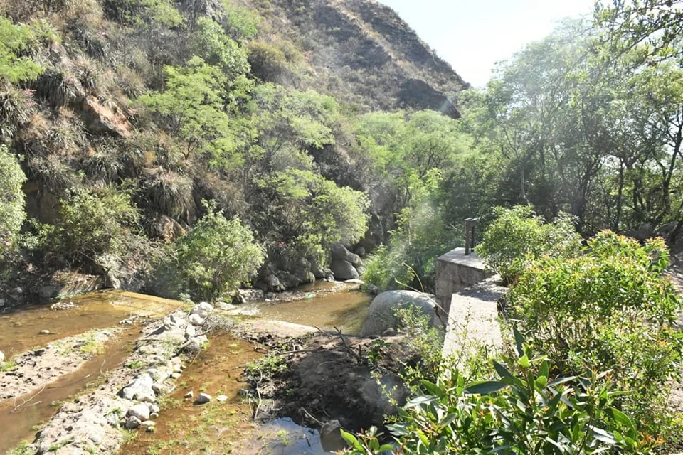
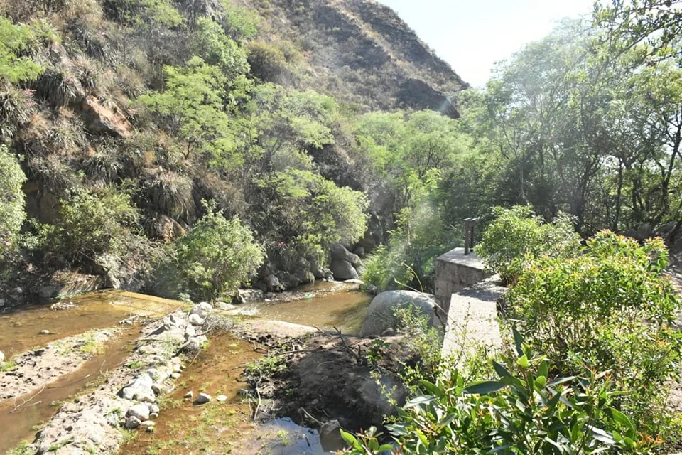

Sobre Aminga
Aminga (Alto del Inca) es la cabecera del Departamento Castro Barros, Provincia de La Rioja. Se sitúa a unos 95– km al norte de la capital provincial, accesible por la Ruta Nacional 75, y aproximadamente a 5 km al sur de Anillaco. Cuenta con aproximadamente 1.600 habitantes. Cuenta con Jardín de infantes N° 38 “Rosario Vera Peñaloza”. Escuela Primaria N° 19 “Domingo Matheu” y un colegio secundario de nivel técnico, especializado en proyectos productivos; El colegio secundario provincial. No ofrece alojamientos formales como hoteles, aunque dispone de un camping donde los visitantes pueden pernoctar, y casas de alquiler temporarios. Aminga combina historia, cultura, naturaleza y tradición vitivinícola en un entorno sereno sobre el faldeo de la Sierra de Velasco. Como cabecera del departamento, ofrece patrimonio religioso, folklore, experiencias rurales auténticas y vinos artesanales. Es un excelente destino para quienes buscan conectar con la identidad y la tranquilidad del interior riojano.
Puntos de Interés
Bodega de Aminga
Forma parte de la Ruta del Vino Riojano, donde se elaboran vinos de alta gama de forma artesanal, permitiendo a los visitantes realizar visitas guiadas para conocer el proceso de elaboración, desde la vid hasta la copa, y disfrutar de degustaciones de sus vinos.
Oratorio de Villafañe
Este lugar histórico ofrece una visión de la arquitectura antigua a través de su templo actual y los restos de la antigua construcción de adobe, fue utilizada como mojón para la división de tierras y su construcción data de antes de 1702. No se sabe en qué tiempo del siglo 18 pasó a la Familia Villafañe conocida como Oratorio de los Villafañe, Según documentos del Obispado de Córdoba, dicho Oratorio se usó también como registro de las poblaciones aborígenes y la respectiva asignación de tierras.
Iglesia Nuestra Señora de La Merced
Es un templo dedicado a la Virgen de la Merced que se encuentra al lado de las ruinas de la primera iglesia del pueblo, la cual está dedicada a la Madre de Dios. Es una imponente estructura y el centro de la vida espiritual de Aminga, capital del departamento.
Galería
 
